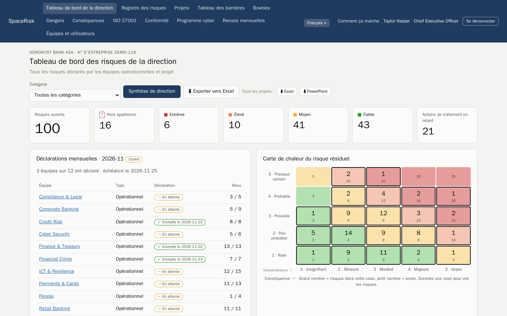
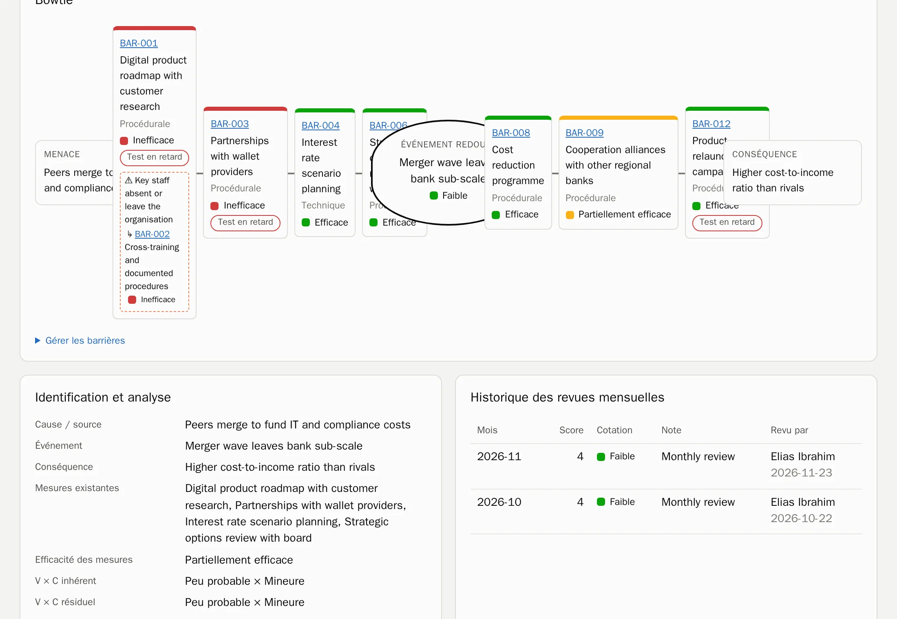
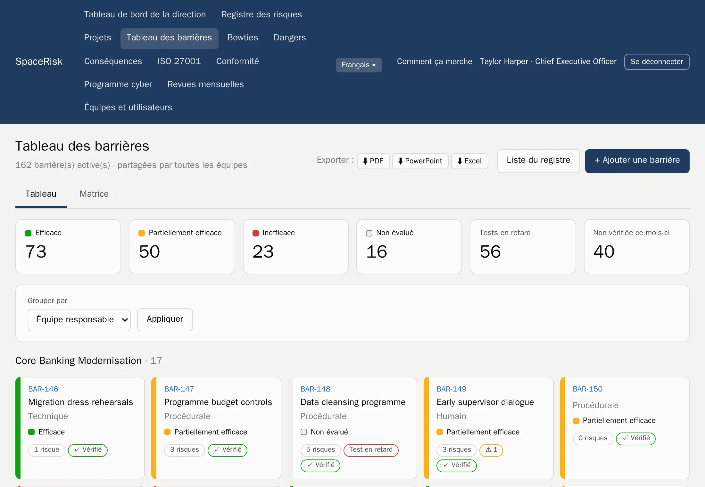
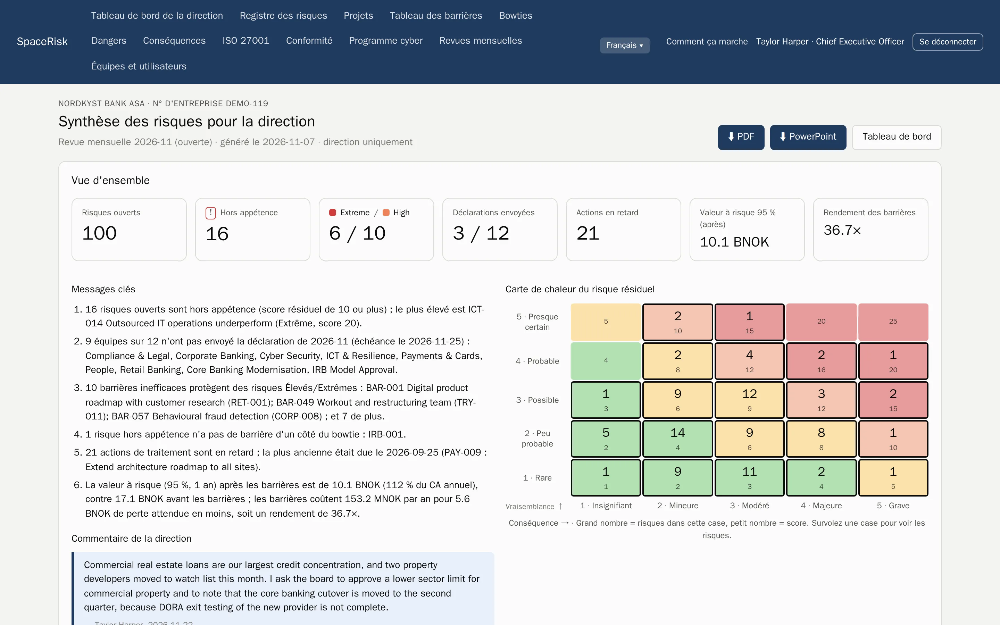
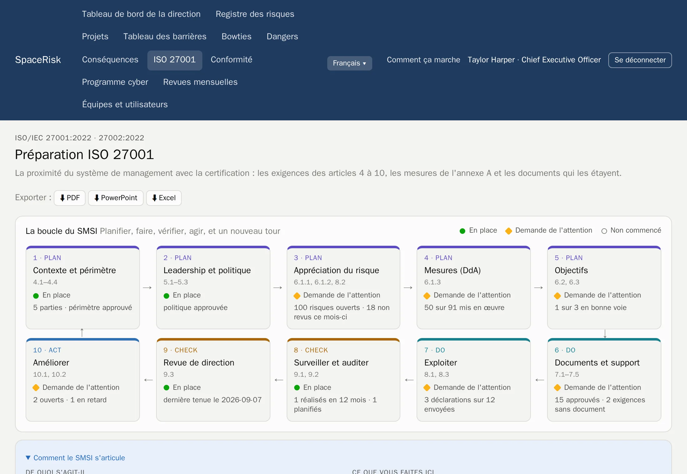
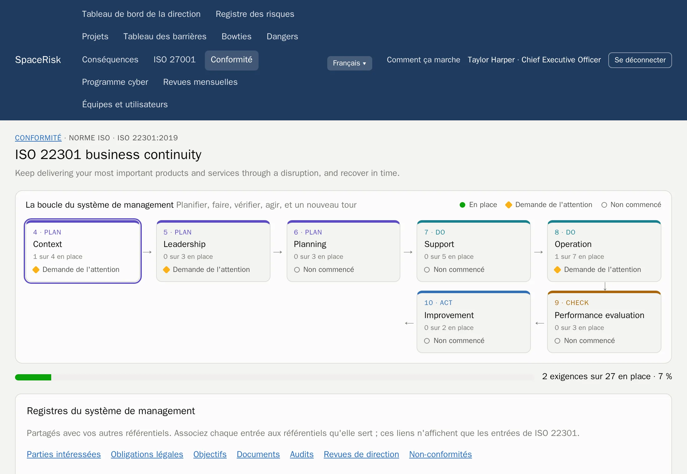
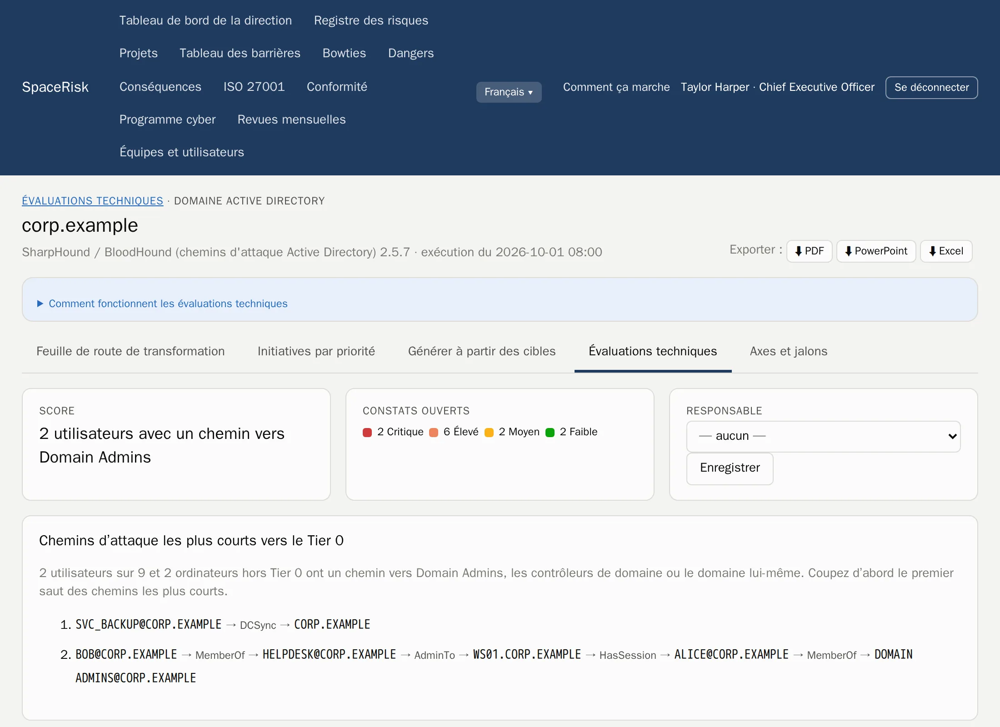
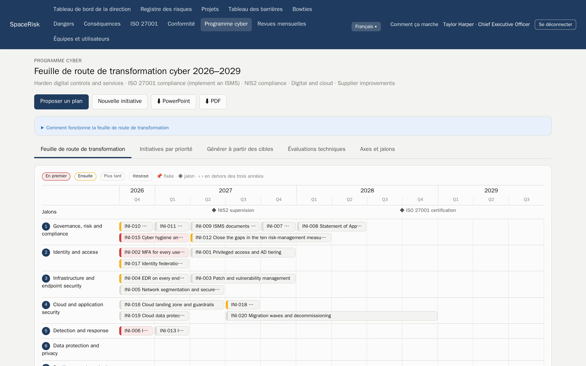

Gestion des risques ISO 31000
Chaque risque, du terrain au conseil d'administration.
SpaceRisk transforme les risques que connaissent vos équipes en bowties vivants, vérifie chaque mois les barrières qui les arrêtent et montre à la direction ce qu'ils coûteraient.
Hébergé par nous ou sur vos propres serveurs. Vos données restent toujours les vôtres.

- Banque
- Assurance
- Hôpitaux
- Pétrole et gaz
- Électricité
- Logiciel
- Secteur public
- Logistique
- Construction
- Commerce de détail
Comment ça marche
La boucle ISO 31000, intégrée au mois.
Pas de projet risques à part qui devient obsolète. SpaceRisk fait de la norme un rythme mensuel simple que chaque équipe peut suivre.
- 1
Fixer les critères
Une échelle de vraisemblance et de gravité, votre appétence au risque et vos catégories.
- 2
Identifier
Équipes et projets notent ce qui peut mal tourner, là où ils travaillent.
- 3
Analyser et évaluer
Niveaux brut, résiduel et cible, au regard de l'appétence.
- 4
Traiter
Barrières et actions avec responsables et échéances.
- 5
Surveiller et revoir
Chaque mois, chaque équipe revoit ses risques, vérifie ses barrières et remet sa déclaration.
Bowties et barrières
Voyez ce qui se dresse entre une menace et le dommage.
Chaque risque est un bowtie : les menaces à gauche, les conséquences à droite et les barrières entre les deux. Les barrières vivent dans un registre partagé, si bien qu'un contrôle protège plusieurs risques, et vous voyez tout de suite quand une barrière faible porte trop.
- Barrières préventives et d'atténuation, avec leur efficacité et la date du dernier test
- Un tableau des barrières pour toute l'organisation, regroupé par équipe responsable ou par type
- Les facteurs d'escalade, et les barrières qui protègent les barrières


Revues mensuelles
Un même rythme pour chaque équipe.
Chaque mois, l'équipe revoit tous ses risques et vérifie chaque barrière, puis le responsable d'équipe remet la déclaration. Vous savez toujours qui est à jour, et la tendance de chaque risque se construit toute seule.
- Tableaux de bord par équipe et par projet, avec carte de chaleur et tendance de chaque risque
- Une déclaration ne peut être remise que lorsque tous les risques sont revus
- Un commentaire pour chaque mois, et tout l'historique pour l'auditeur
Pour la direction
Le risque dans la langue du conseil.
SpaceRisk chiffre l'exposition : perte attendue, Value at Risk simulée avant et après les barrières, et rendement de ce que coûtent les barrières. La synthèse de direction rédige ses propres messages clés et est prête à être présentée.
- VaR 95 %
- simulée, avant et après les barrières
- 1 clic
- synthèse de direction en PDF ou PowerPoint
- Excel
- chaque registre, prêt à analyser

Conformité
Un système de management, de nombreuses normes.
Activez les référentiels dont vous avez besoin. Chacun affiche sa boucle Planifier, Faire, Vérifier, Agir avec l'avancement en direct et vos prochaines étapes, et tous partagent les mêmes registres : parties intéressées, obligations légales, objectifs, documents, audits, revues de direction et non-conformités.
- Disponible
ISO/IEC 27001 et 27002
Chapitres 4 à 10, les 93 mesures, une déclaration d'applicabilité, la boucle du SMSI et des exports prêts pour l'audit.
- Disponible
ISO 22301
Continuité d'activité : la boucle du SMCA et chaque exigence, avec responsables et preuves.
- Disponible
ISO 45001
Santé et sécurité au travail, avec la participation des travailleurs et les exigences légales.
- Bientôt
NIS2 et DORA
Délais de notification des incidents, registres des prestataires et tests de résilience.
- Bientôt
RGPD et ISO 27701
Registre des traitements, AIPD et demandes des personnes concernées.
- Bientôt
ISO 42001 et le CRA
Systèmes de management de l'IA et sécurité des produits au titre du Cyber Resilience Act.


Des conseils, pas un avis juridique. Les exigences sont rédigées avec nos propres mots.
Programme cyber
Des constats de sécurité à un plan sur trois ans.
Importez les résultats des outils que votre équipe utilise déjà. SpaceRisk transforme les constats en preuves pour les bonnes mesures ISO, trouve les chemins d'attaque les plus courts vers vos administrateurs de domaine et propose un programme priorisé sur une carte de transformation à présenter directement au conseil.
- PingCastle
- Prowler
- SharpHound
- Constats, tendances et corrections par cible, sur toutes les exécutions
- Chemins d'attaque vers le Tier 0 à partir des données Active Directory
- Une carte de transformation notée, exportée en PowerPoint et PDF


Agents et API
Confiez la paperasse à vos agents. Les humains décident toujours.
Les scripts et agents IA ont leurs propres jetons et une API REST documentée. Ils déclarent et revoient des risques, vérifient des barrières et importent des résultats d'outils. En mode proposition, chaque changement attend dans une boîte de réception qu'une personne l'approuve.
- Documentation OpenAPI
- Chaque proposition est vérifiée avant toute approbation
- Les jetons des agents sont stockés sous forme de hachage
POST /api/v1/risks/ICT-014/review
Authorization: Bearer ••••••••
← 202 en attente d'approbation dans la boîte de réception
POST /api/v1/assessments/uploads?tool=pingcastle
Content-Type: application/xml
← 201 résultats enregistrésDémonstrations
92 entreprises à explorer, des banques aux hôpitaux.
Commencez dans un univers que vous connaissez. Chaque démonstration est une entreprise fictive avec ses équipes, ses risques, ses barrières et son historique, prête en quelques minutes. Chacune est livrée avec un exemple de synthèse de direction en PDF.
Conçu pour inspirer confiance.
Hébergé ou auto-hébergé
Nous l'exploitons pour vous, ou vous l'exécutez sur vos propres serveurs, Intel ou ARM.
Vos données sont à vous
Exportez tout en PDF, PowerPoint, Excel ou sous forme de sauvegarde complète de la base, à tout moment.
Accès par rôle
La direction voit tout. Les équipes voient ce qui les concerne. Les montants restent réservés à la direction.
Sept langues
Anglais, norvégien, allemand, espagnol, français, italien et portugais, pour chaque utilisateur.
Découvrez SpaceRisk avec vos propres risques.
Parlez-nous de votre organisation et nous préparerons une démonstration qui lui ressemble.